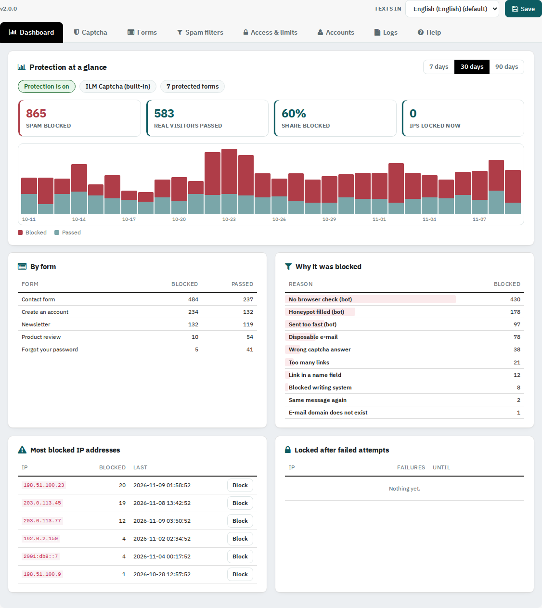

The module works at once: the built-in ILM Captcha protects the contact, account, password, checkout, newsletter, review and back-in-stock forms. Log in is not protected until you turn it on.
Upload the new zip over the old module. Your settings are kept: captcha type and keys, protected forms, banned e-mails and domains, blocked words, IP lists, attempt limits and log settings. Motion and Shuffled captchas no longer exist; shops that used them get the built-in ILM Captcha.
The tabs are Dashboard, Captcha, Forms, Spam filters, Access & limits, Accounts, Logs and Help. Click Save at the top right to keep your changes. Settings are saved per shop.
If your shop has several languages, use the Texts in list to write the visitor texts for each language.
